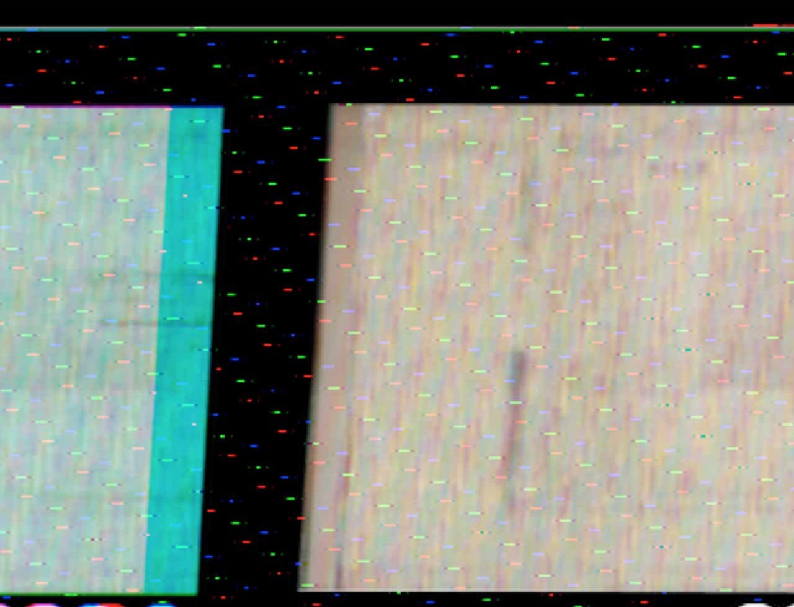
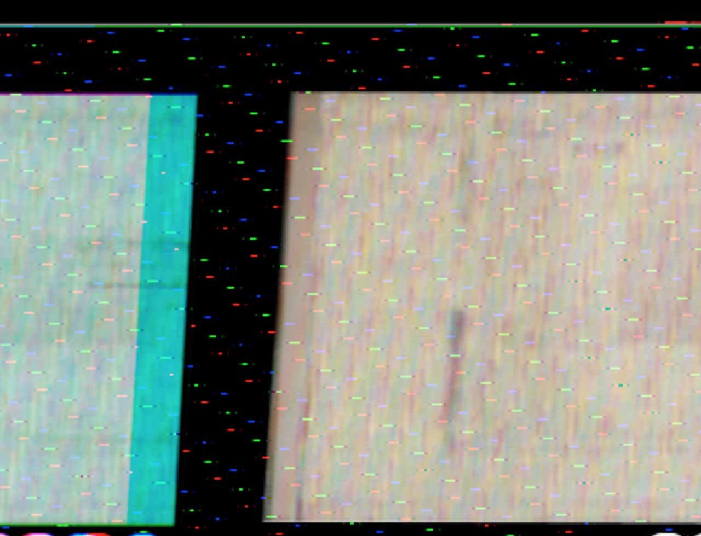
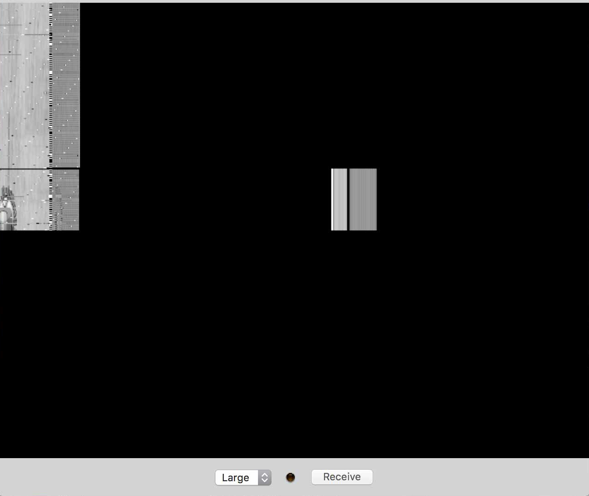
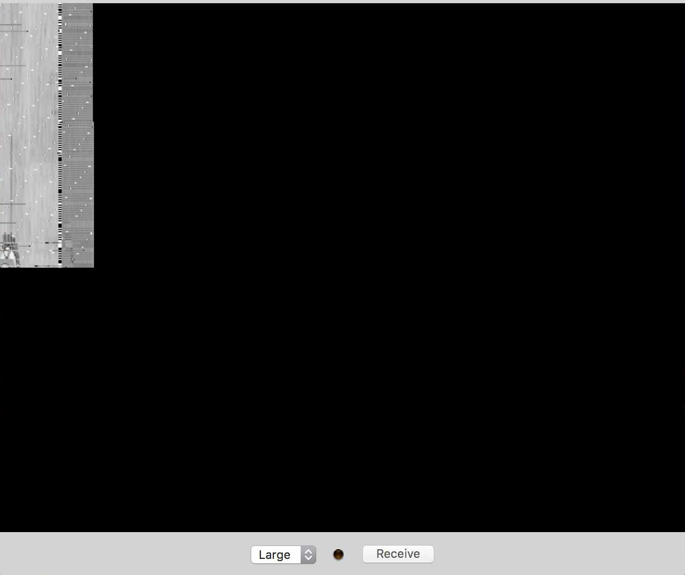
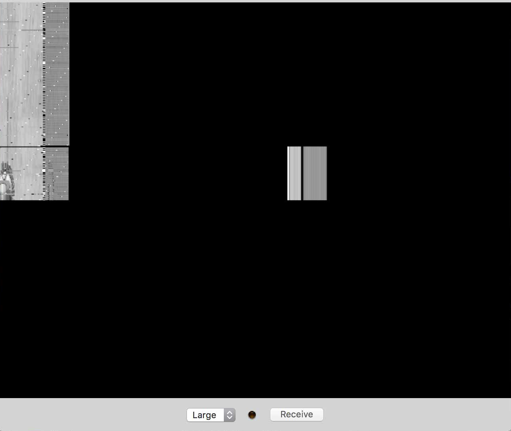
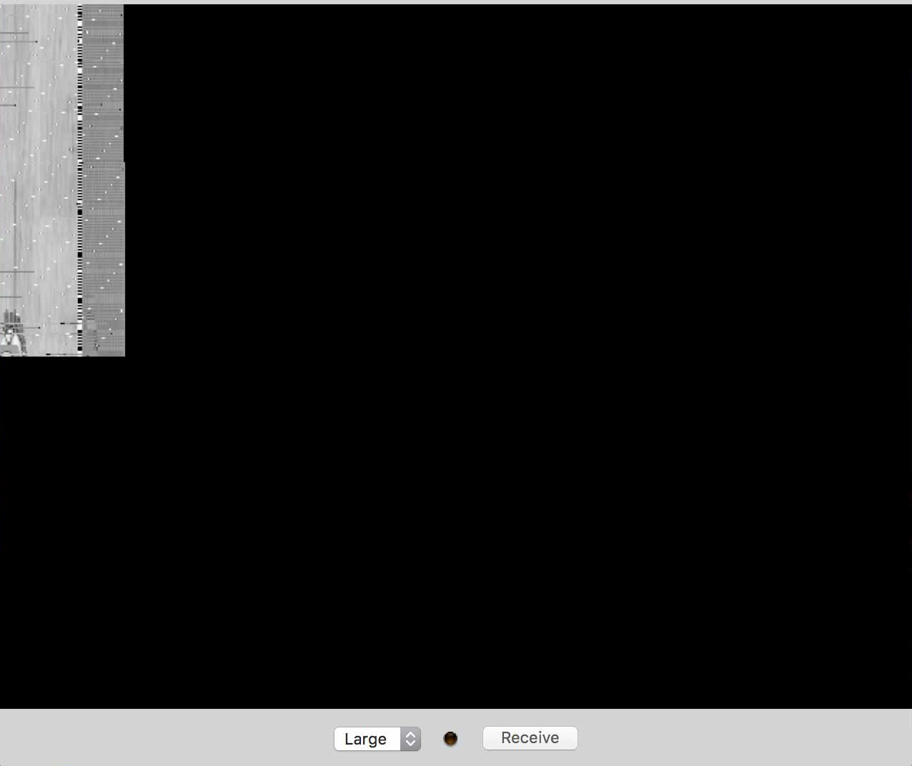
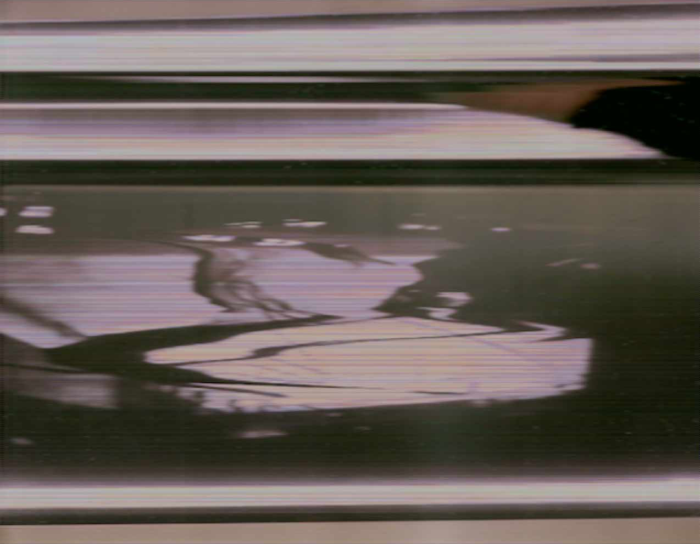
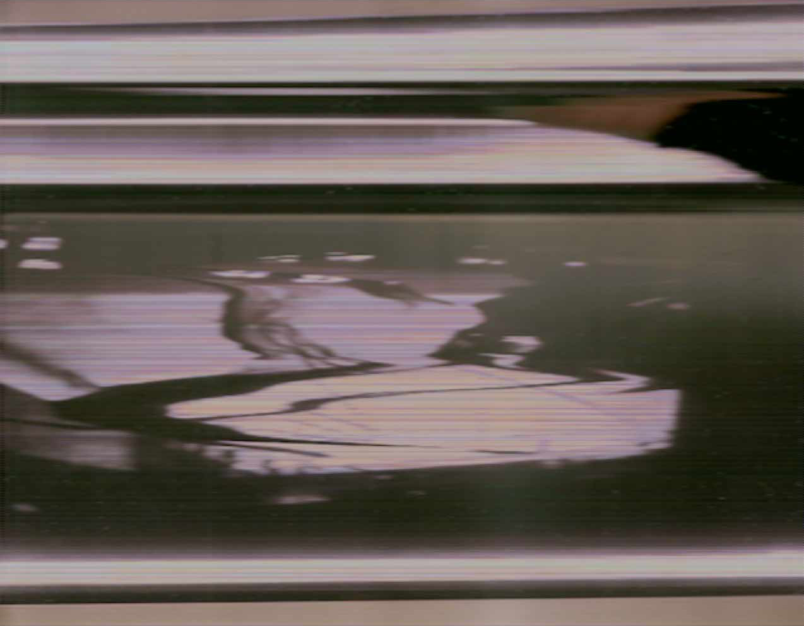

Here is a sample of images and videos from tryouts
with the SSTV technology, using a software specific for this*.
I've tested the transmission of the images recording the
sound generated, instead of transmitting the signal over HF or VHF bands as it is traditionally done.
Initially, the sound was recorded from the computer microphone and received from it's built in microphone.
Sending and receiving the sound directly channeling it with the computer sound software*, created some interesting images and
sometimes awful distortions.
Finally, a headphone with microphone was used to generate a very clean image. Nevertheless,
using the software instead of the headphone, sometimes worked even better after some adjustments.

 



 





 
